De mislukscène
Voor: een hoge opname waarop het paar op de punt van de boeg staat (half in het water). Na: op de bank, camera onder het dak.
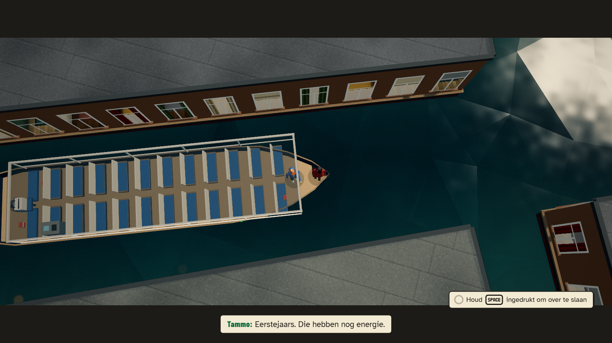

Branch cutscenes-visueel-23-11. Stills uit een eigen headless Chrome tegen de gestagede game (dezelfde wereld en scènes; geen Electron). De scènes staan op een vaste testplek (Grote Markt) of in de echte rondvaartboot bij de Spilsluizen. Een kaart "TEST" in een voor-beeld komt uit het oude testscript, niet uit het spel.
M10.intro, M30.outro en de keuken van de opening (deur en "Moi. De bank?"). Niet bekeken: de zitplaatsen op kleine boten, M01.intro, M01.outro, M15.outro, carriere-bezit-start en de bus. Details: CUTSCENE-ISSUES-23-11.md.Voor: het paar stond dwars op het dak-eind, hoofden door het glas, blik opzij. Na: zittend op de bank onder het dak, lijven naar de boeg, alleen het hoofd draait naar de spreker.
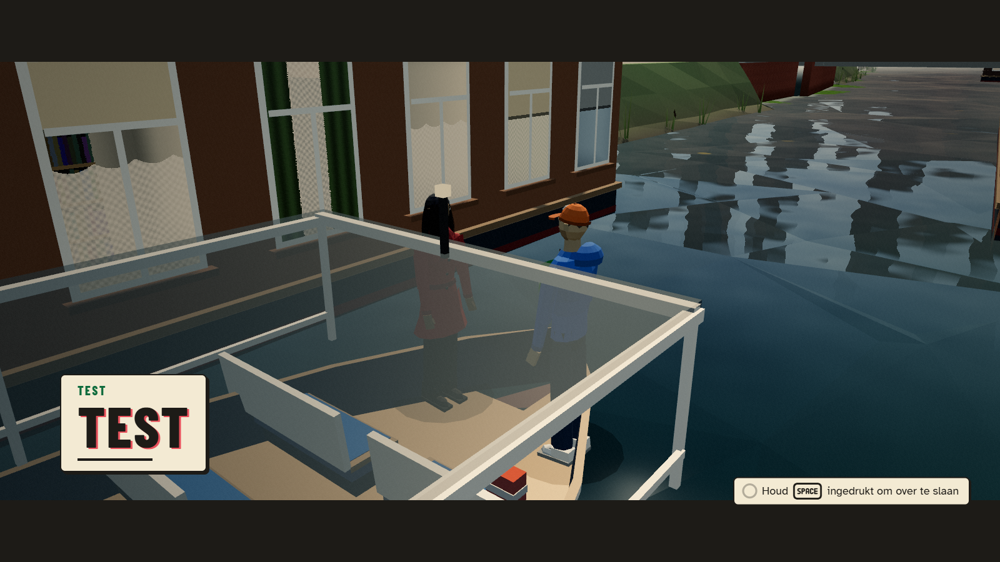
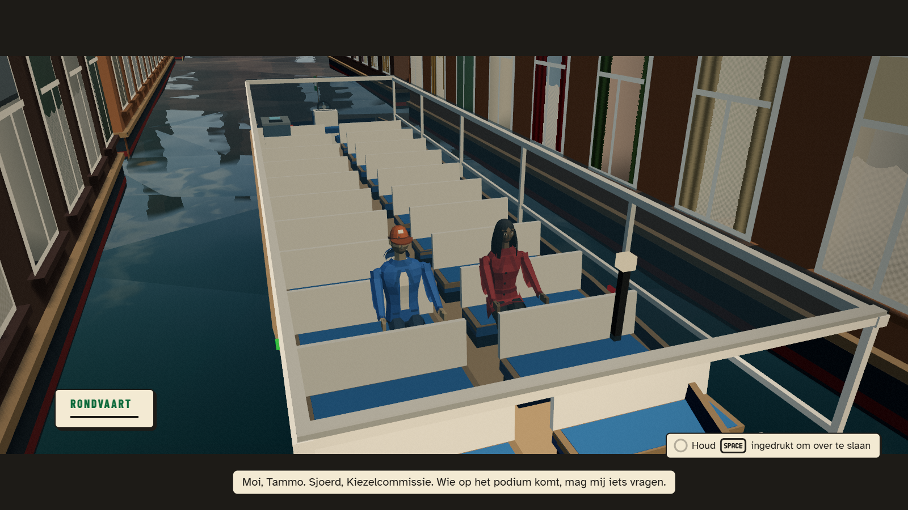
Voor: de scène begon op de hoogte van de volgcamera (16 m) en zakte seconden lang naar het paar. Na: het eerste beeld is meteen het paar op de bank (harde snee).
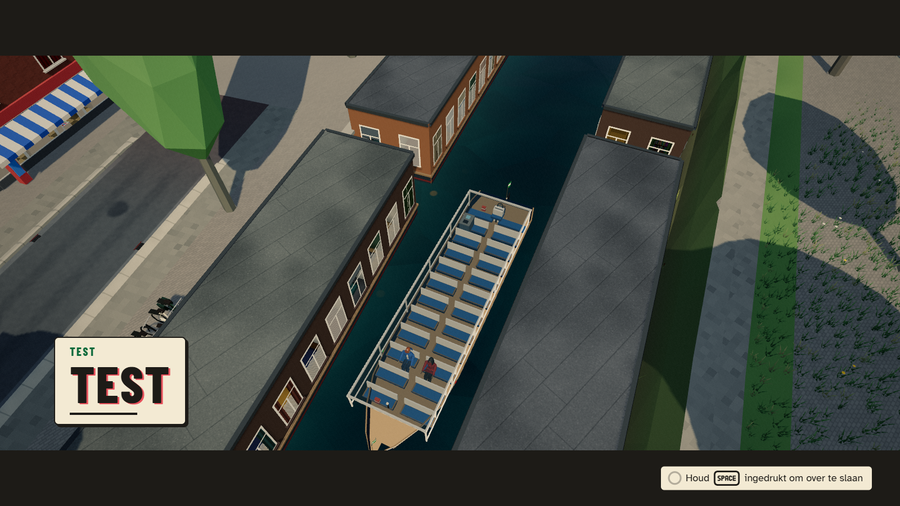
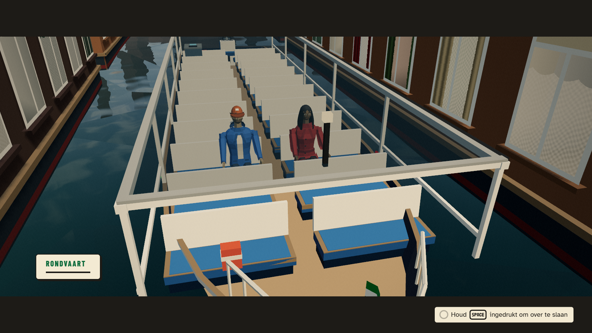
Voor: een hoge opname waarop het paar op de punt van de boeg staat (half in het water). Na: op de bank, camera onder het dak.

Voor: de camera op 1,5 m kapte de hoofden af en er was geen reling. Na: hoofden in beeld en een reling langs het voordek; de handen liggen erop.
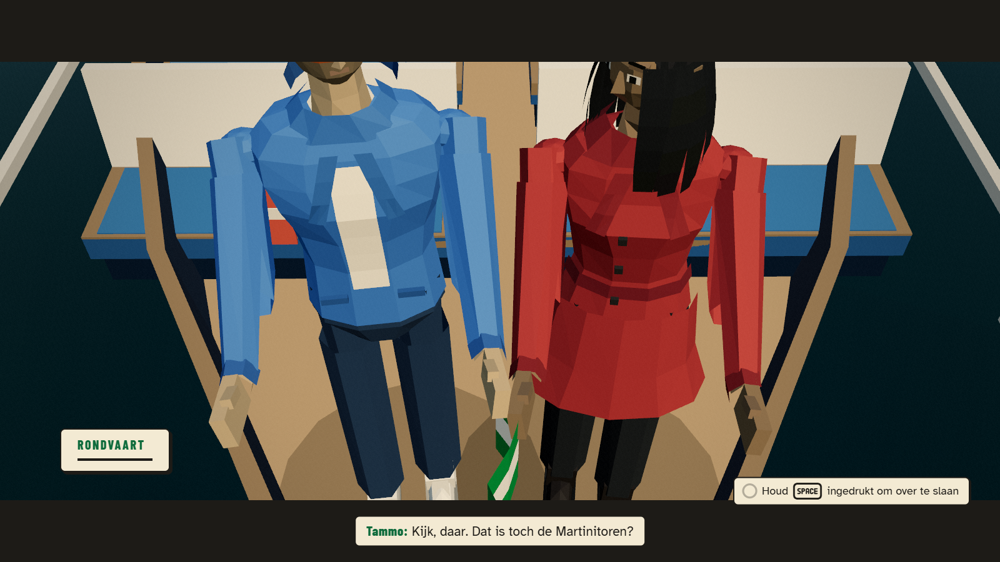
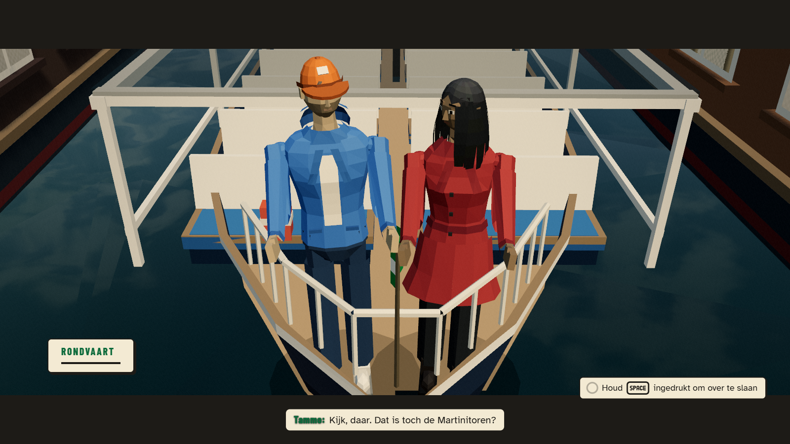
Voor: ze begonnen midden in de limo, alleen hun voeten kwamen eronder uit. Na: ze stappen aan de zijkant uit. (Het groene vlak op straat linksonder en het zwarte bord met paal horen bij de testplek en het pand, niet bij de scène.)
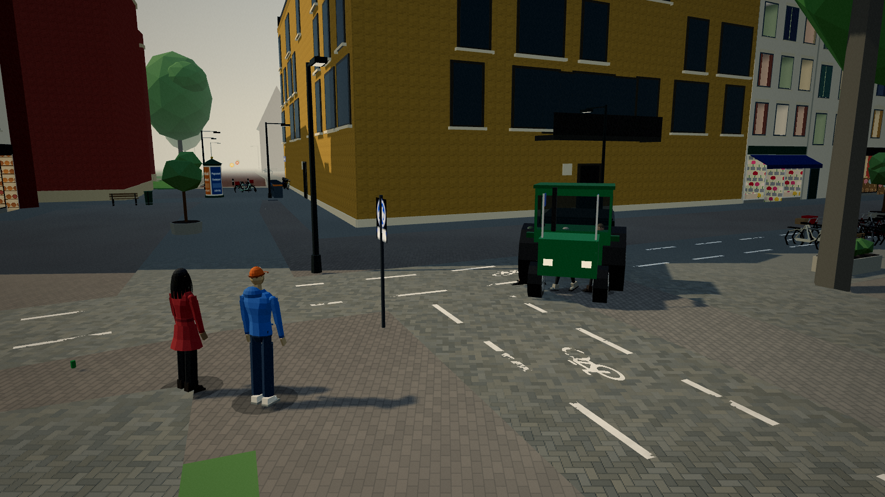

Voor: de camera keek van de snackwagen af naar het Stadhuis; de wagen verdween na de opening uit beeld. Na: van achter het paar, met de wagen Tam & Tes achter Tammo.
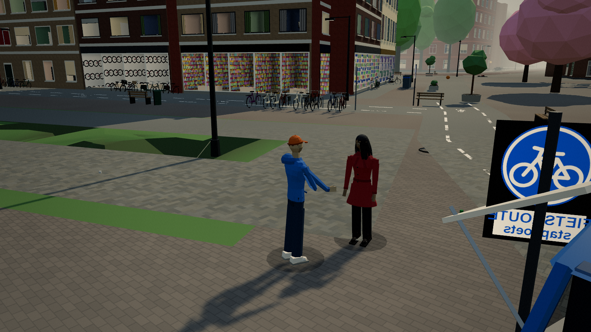
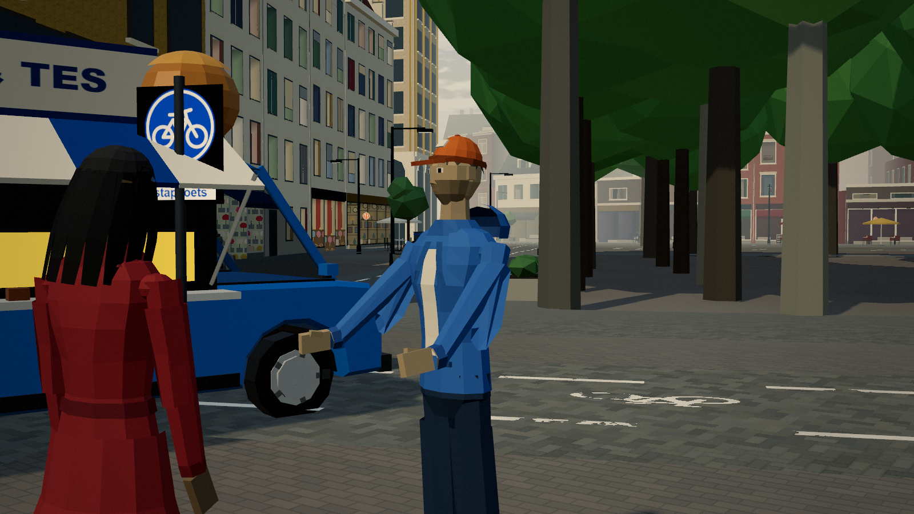
Voor: achter de open deur een zwart vlak; Tammo kwam door de wand in losse delen. Na: een echte deuropening met een verlichte gang (vloer, kapstok met jas, lamp).
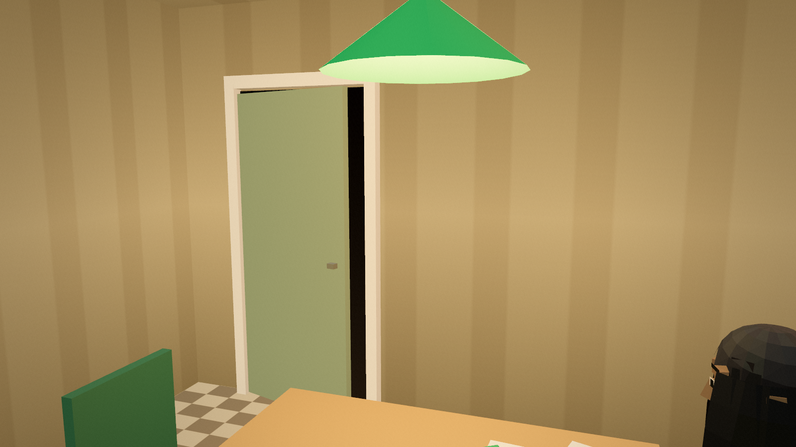
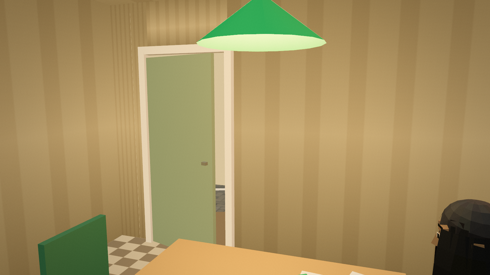
Voor: laag en dichtbij, het beeld richtte op de borst. Na: op ooghoogte en iets verder weg, het hele hoofd met ruimte erboven, en de gang achter hem. (De grijze strook in de gang is de straat onder de testplek; in het spel hangt de keuken hoog in de flat.)
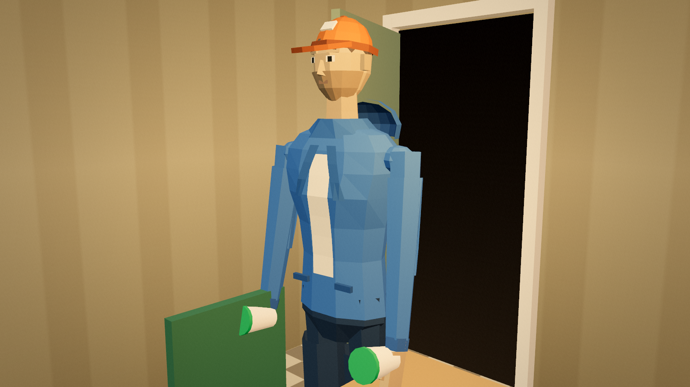
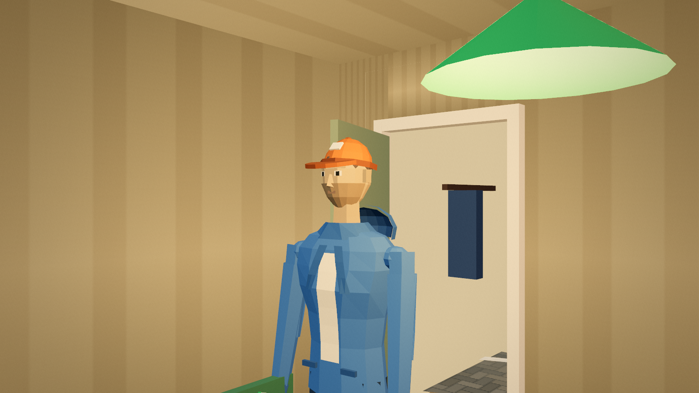